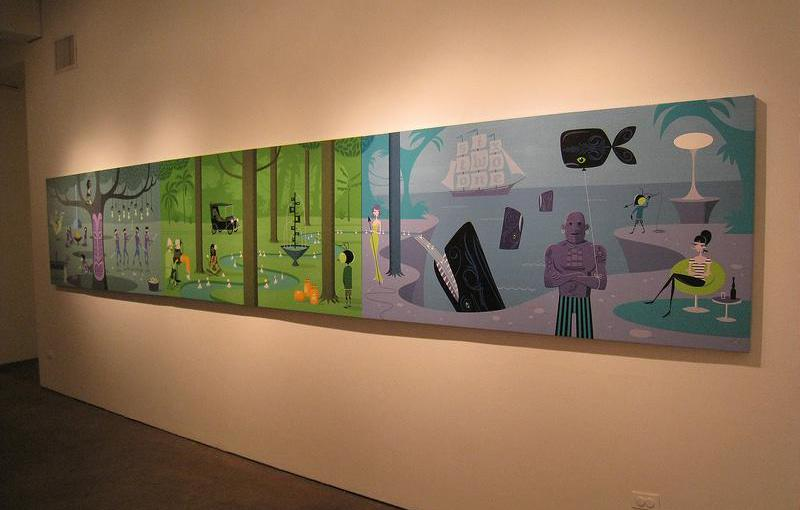
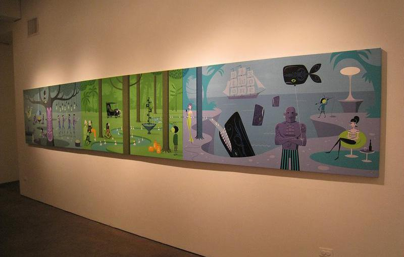
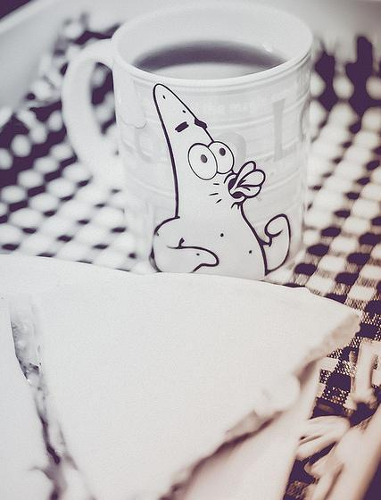
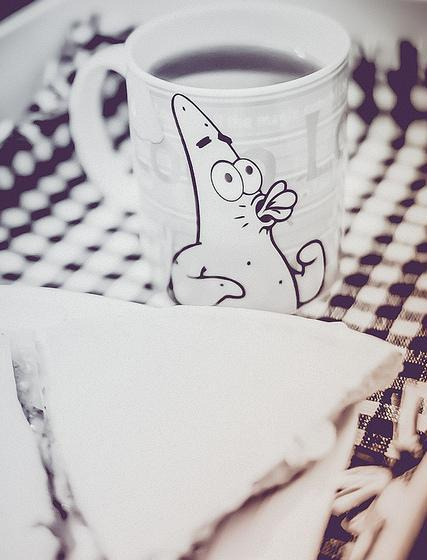
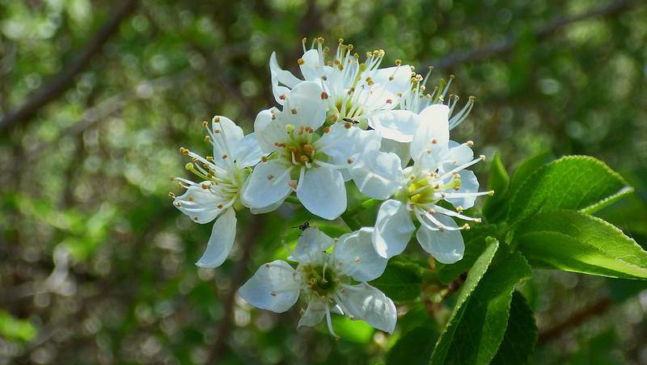
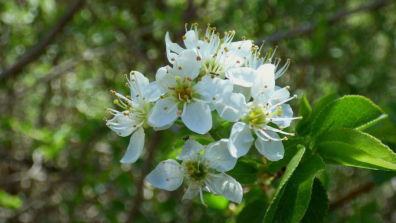
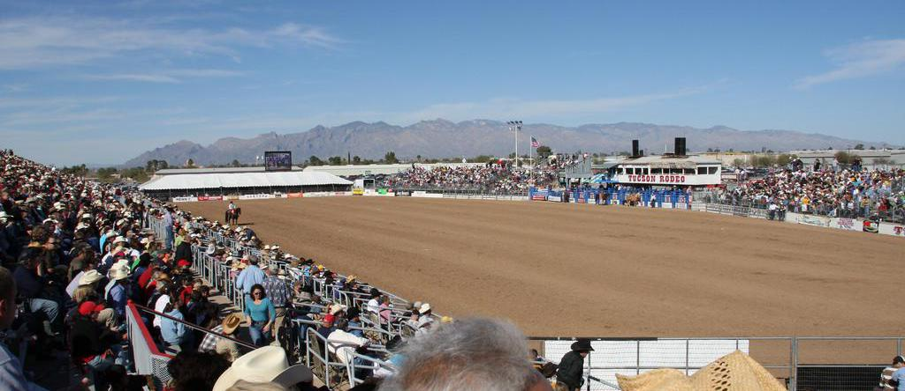
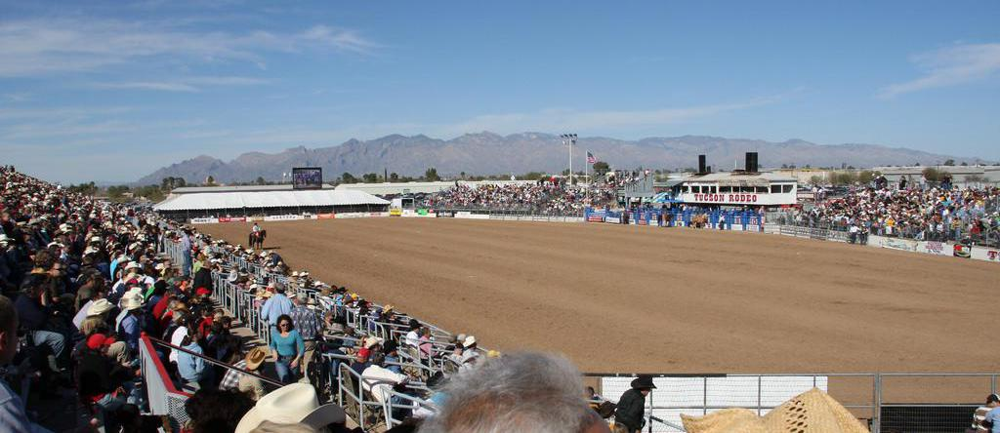
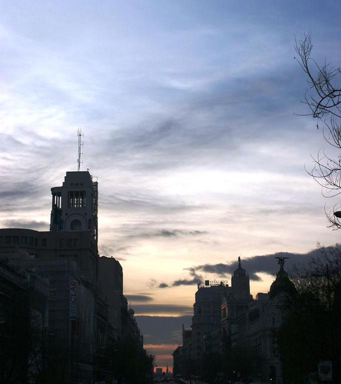
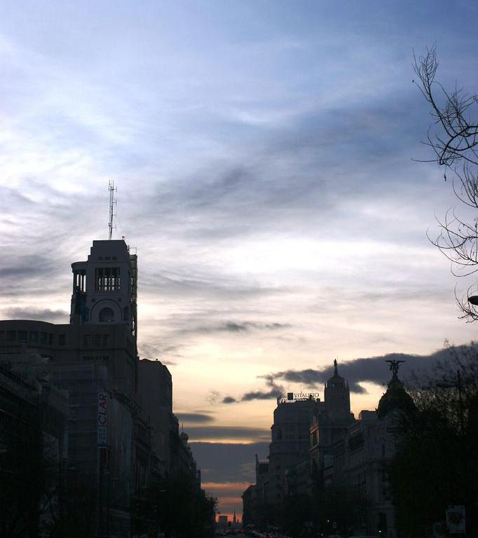

@article{li2017a2,
title={A2-RL: Aesthetics Aware Reinforcement Learning for Automatic Image Cropping},
author={Debang Li, Wu, Huikai and and Zhang, Junge and Huang, Kaiqi},
journal={arXiv preprint arXiv:1709.04595},
year={2017}
}

 



 



 


 



 
